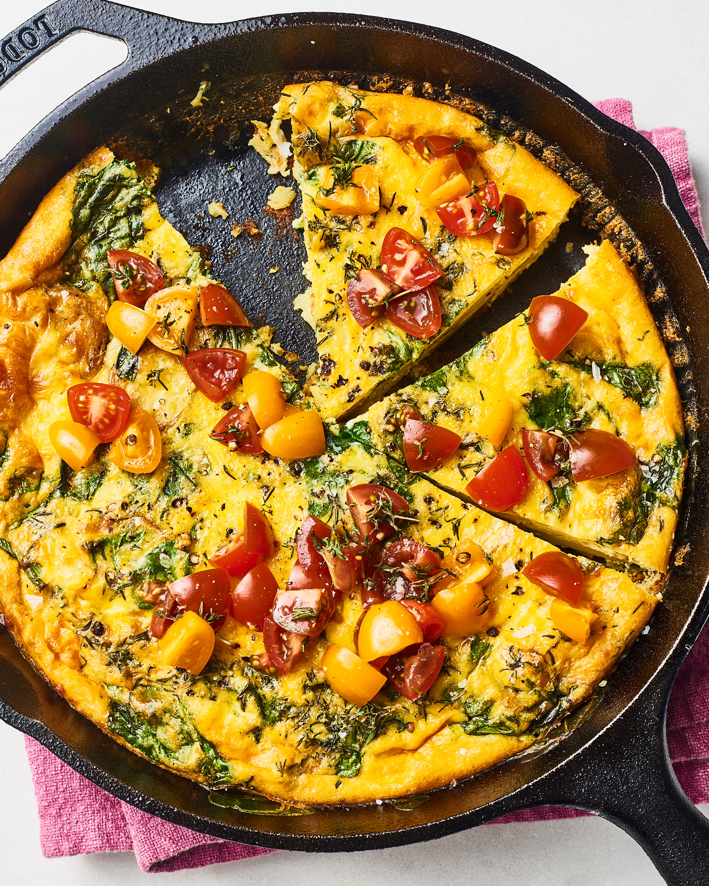

Fritatta Recipe

This is the first recipe I ever learned how to make! It's wicked easy
(as long as you have a cast iron skillet) and is exceptional leftover.
I usually make it at the start of the work wee kand have a slice for
breakfast every day.
Ingredients
- 12 Eggs
- Handful of cherry tomatoes
- feta cheese
- Fresh herbs of your choosing
- 1 Potato
- Olive Oil
- 1 can Northern or Black Beans
Instructions
- Heat oil in the skillet
- Slice the potato into medallions about 1/4" thick
- Arrange the potatoes on the bottom of the skillet to cover the surface
- While you're waiting, quarter your tomatoes and drain and rinse your beans
- Flip your potato medallions and salt and pepper them
- Whisk your eggs in a separate bowl
- Add your beans, and half of your herbs to the skillet and sautee lightly
- Pour the eggs in the skillet and cover
- After the middle of the frittata has started to set, add the tomatoes, herbs and feta cheese to the top
- Sprinkle the feta on top, and put your oven on the 'broil' setting
- Move the cast iron into the oven under the broiler. You want the top of the frittata to cook, and veggies to wilt a ltitle.
- Remove, and let sit before dividing it up between your friends :)
Back to All Recipes